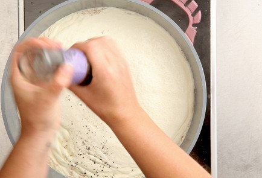

Один из величайших гарниров в мировой кулинарии и, наверное, самый эффективный способ использования картошки. Состав прост: картофель, сыр и жирные сливки, которые не стоит заменять на продукты вроде сметаны или майонеза. Хорошо приготовленный картофельный гратен (или по-французски Gratin) может затмить даже основное блюдо, гарниром к которому его подают. Фокус тут в том, чтобы не перелить сливок, иначе гратен будет слишком жирным и жилковатым, но и нельзя их недокладывать, это будет тогда не великий гратен, а просто слоеная запеканка.
ИНГРEДИЕНТЫ:
-
Картофель600 г
-
Молоко300 мл
-
Сливки 48%-ные100 мл
-
Мускатный орех½ чайной ложки
-
Сыр грюйер100 г
-
Чеснок4 зубчика
-
Сольпо вкусу
-
Перец черный молотыйпо вкусу
ИНСТРУКЦИЯ ПРИГОТОВЛЕНИЯ:
-
1. Очистить картошку и нарезать ее тонкими дольками (2–3 мм) — ножом, на терке, удобнее всего на мандолине. Тонко настрогав картошку, не мойте ее, чтобы с водой не выплеснуть крахмал, который понадобится для сгущения сливок.
-
2. В кастрюле на среднем огне довести до кипения молоко и сливки. Добавить картошку и перемешать, чтобы картофель покрылся слоем сливок. Приправить мускатным орехом, солью и перцем.
-
3. Убавить огонь и варить восемь-десять минут, помешивая, чтобы смесь не прилипла ко дну кастрюли. После того как картошка будет готова, что легко проверить на вкус, вмешайте в альянс молока, картофеля и сливок тертый сыр и затем снимите кастрюлю с огня.
-
4. Раздавить чеснок и смешать его с картофелем и всем прочим. Смесь перелить в глубокую форму и поставить запекаться в духовку, разогретую до 120 градусов на двадцать пять минут.
-
 5. Гратен готов, когда кончик острого ножа легко пронзает его (при этом нож не должен входить как в масло, какое-то невесомое сопротивление вы все-таки должны ощущать). Чтобы запеканка подрумянилась, поставьте ее на самую верхнюю полку в духовке и включите максимальный огонь примерно на минуту. Перед подачей дайте картофелю чуть-чуть остыть, чтобы сырно-сливочный соус слегка загустел.
5. Гратен готов, когда кончик острого ножа легко пронзает его (при этом нож не должен входить как в масло, какое-то невесомое сопротивление вы все-таки должны ощущать). Чтобы запеканка подрумянилась, поставьте ее на самую верхнюю полку в духовке и включите максимальный огонь примерно на минуту. Перед подачей дайте картофелю чуть-чуть остыть, чтобы сырно-сливочный соус слегка загустел.